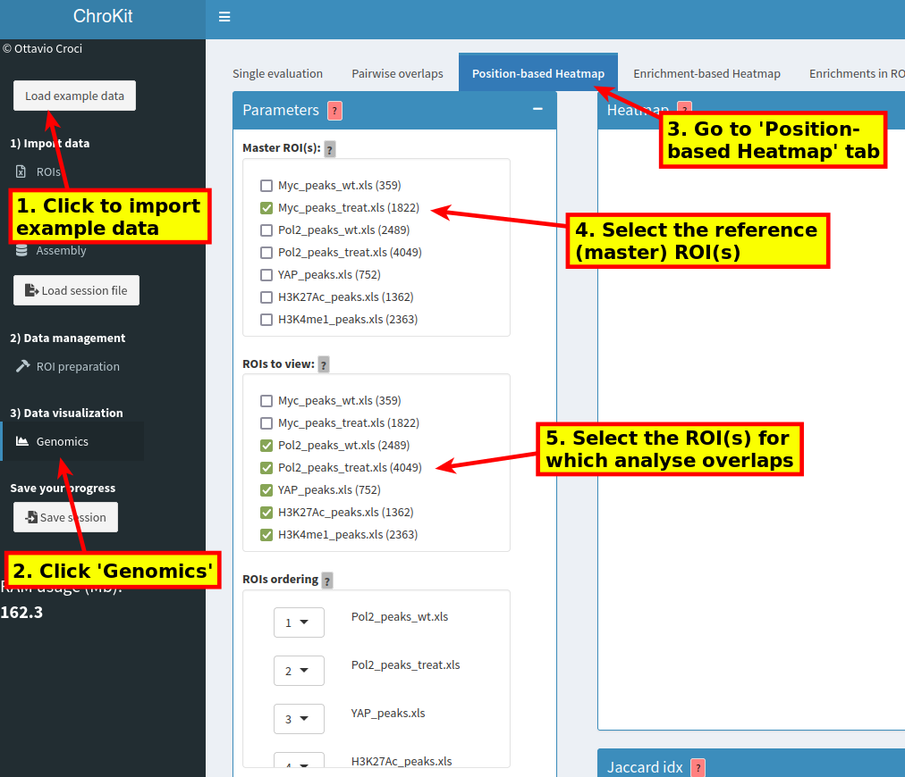
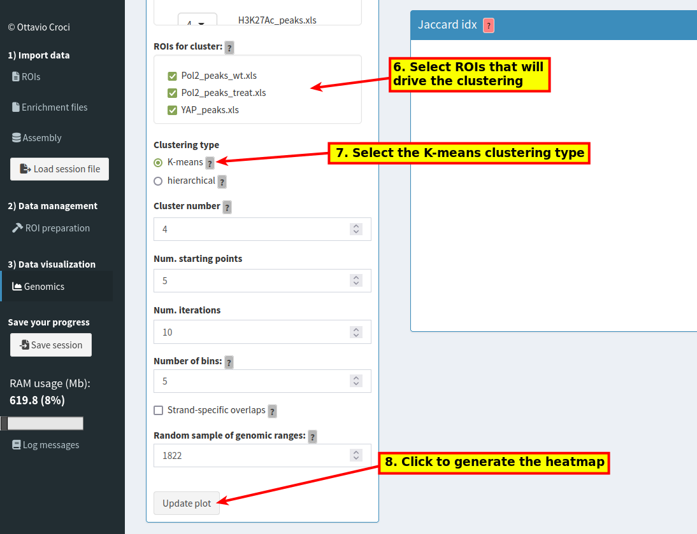
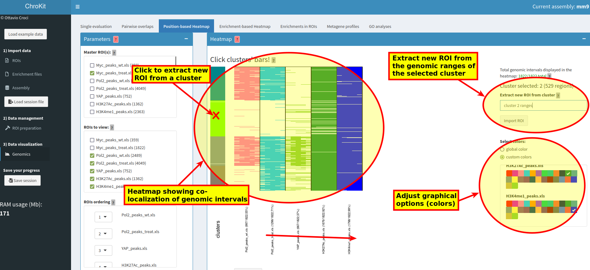
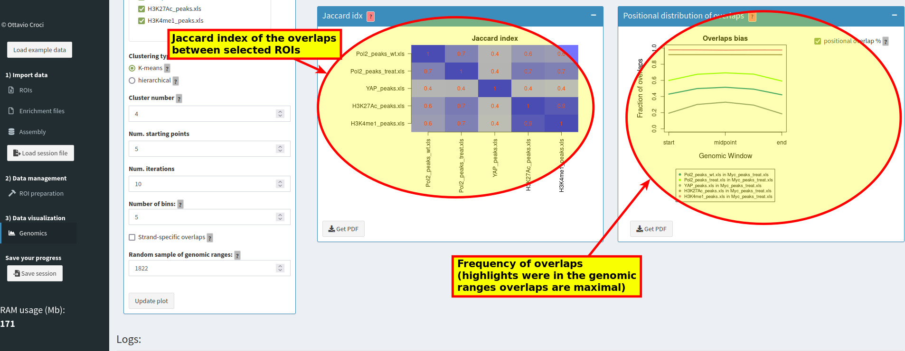

Load the example data and go to the program section for the analyses of multiple overlaps:   Then, visualize the results and, optionally, extract new ROIs from a particular combination of overlaps:  